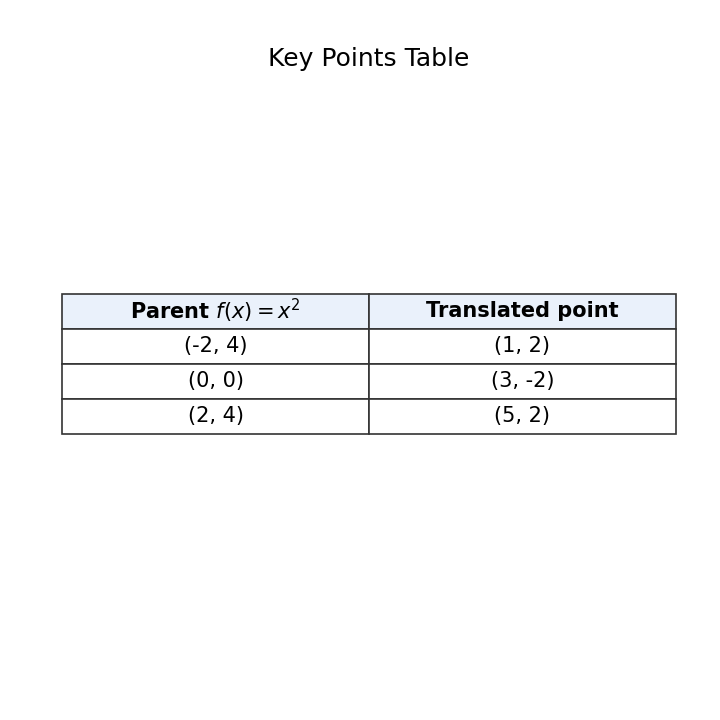
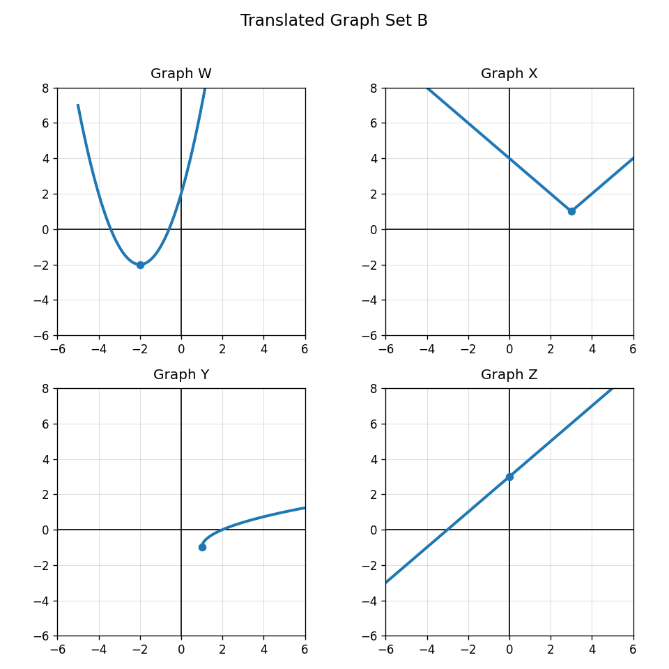

Identify whether the equation suggests a horizontal or vertical shift.
$$g(x)=f(x-2)$$
What point on a quadratic graph is often useful for tracking translations?
Use the key points table. Describe the translation from the parent function to the translated graph.

A student says $g(x)=f(x-3)$ moves the graph left 3 because of the minus sign. Critique the reasoning and correct it.
Name the function family for $y=x^2$.
Name the function family for $y=2^x$.
Which family often has two separated branches?
Which family often has a V-shaped graph?
Use Translated Graph Set B only for parent shapes. Classify Graphs W, X, Y, and Z by function family.

A graph has one endpoint and continues only to the right. Which family is most likely? Explain.
How can an equation and a graph both provide evidence for the same function family?
Design three clues that would help a classmate distinguish linear, quadratic, and exponential functions.
Define solution to a system of inequalities.
How many constraints are represented by $x\ge 0$, $y\ge 0$, and $3x+2y\le 24$?
Determine whether $(4,5)$ satisfies all three constraints: $x\ge 0$, $y\ge 0$, and $3x+2y\le 24$.
Why is checking only one inequality not enough to prove a point is feasible?